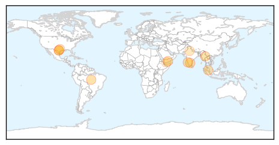

Dengue Fever
30-Day Web Trend
3 alerts, 6 warnings

30-Day Twitter Trend
3 alerts, 0 warnings

Article Locations
Article Confidences

Top Articles:
- 0.996
- City's Platelet Count Okay to Tackle Dengue
- 0.993
- Dengue: most hospitals run short of beds
- 0.993
- Piura: Alert for potential Zika virus coming from Brasil
- 0.974
- Dengue Fever On The Rise On Thai-Burma Border « Karen News
- 0.952
- More than 3,000 dengue cases in Yemen since March: WHO
- 0.943
- Spike in dengue cases highest ever in Malaysia
- 0.930
- Importing a Potential Epidemic
- 0.927
- Importing a Potential Epidemic
- 0.855
- Experts Warn Of Mosquito Infestation This Summer
- 0.745
- What doctors want: A reality check
- 0.663
- Saudi-led warplanes strike key targets of Houthis across Yemen
Top Tweets:
-
No tweets found for Jun 24, 2015
Meningitis
30-Day Web Trend
4 alerts, 0 warnings

30-Day Twitter Trend
0 alerts, 0 warnings

Article Locations

Article Confidences

Top Articles:
- 0.985
- Tuberculosis primarily affects lungs
- 0.906
- Health Panel Recommends Cautious Approach to Meningitis B Vaccine
- 0.878
- Protect our students from meningitis
- 0.850
- Meningitis Vaccine Recommended For All College Students ?
- 0.837
- Mum whose son died after battling meningitis welcomes new vaccine
- 0.802
- U.S. CDC updates recommendation for new meningitis B vaccines
- 0.802
- Mom Of Meningitis Victim: ‘I Lost My Baby Girl To A Vaccine-Preventable Disease’ « CBS Denver
- 0.801
- U.S. CDC updates recommendation for new meningitis B vaccines
- 0.697
- Man tells story of losing legs to promote vaccinations for...
- 0.655
- ACIP gives Glaxo, Pfizer a lukewarm decision for new meningitis B vaccines
- 0.618
- Guernsey families lobby for meningitis vaccine
- 0.616
- Parents plead with CDC for new meningitis vaccine
- 0.591
- HBHC has vaccinated more than 1,000 people for meningitis since June 3
Top Tweets:
-
No tweets found for Jun 24, 2015